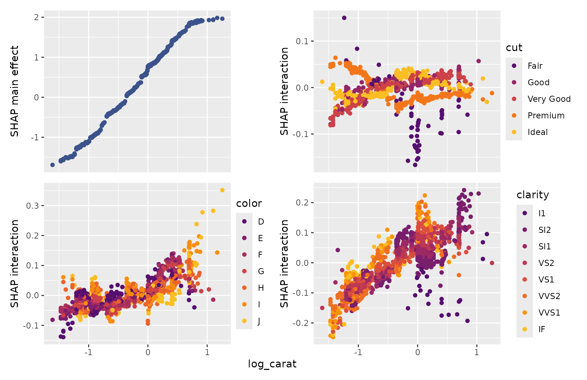
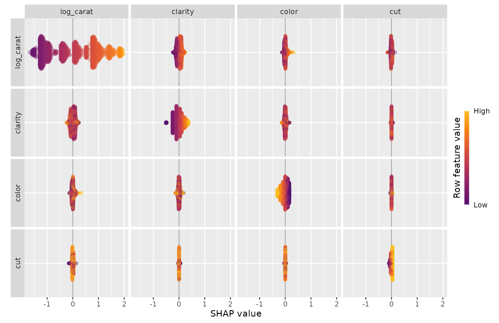
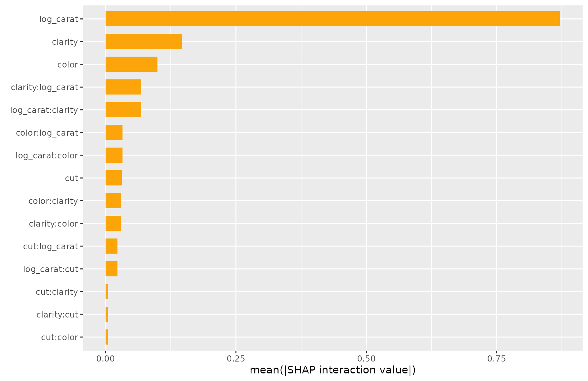
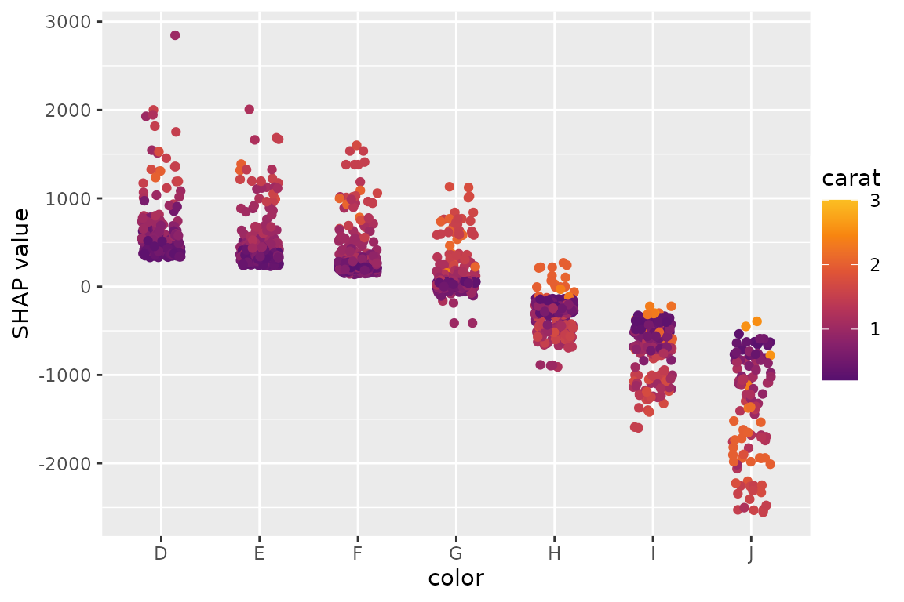
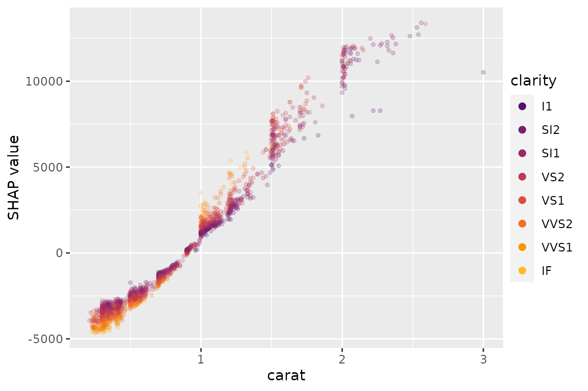
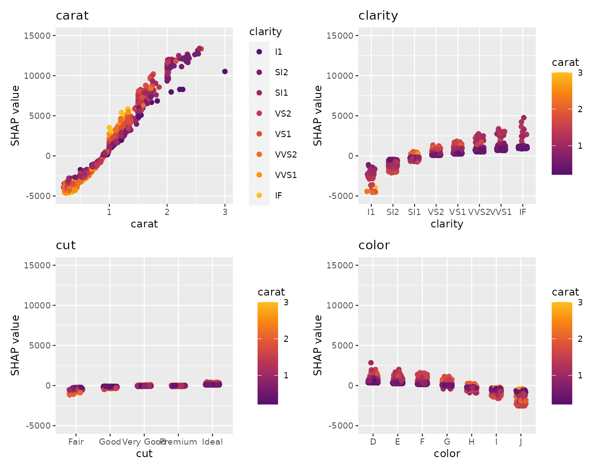

Overview
SHAP (SHapley Additive exPlanations, see Lundberg and Lee (2017)) is an ingenious way to study black box models. SHAP values decompose - as fair as possible - predictions into additive feature contributions. Crunching SHAP values requires clever algorithms by clever people. Analyzing them, however, is super easy with the right visualizations. {shapviz} offers the latter:
-
sv_importance(): Importance plots (bar plots and/or beeswarm plots) to study variable importance. -
sv_dependence()andsv_dependence2D(): Dependence plots to study feature effects and interactions. -
sv_interaction(): Interaction plots. -
sv_waterfall(): Waterfall plots. -
sv_force(): Force plots as an alternative to waterfall plots.
These plots require a “shapviz” object, which is built from two things only:
-
S: Matrix of SHAP values -
X: Dataset that includes the corresponding feature values
Optionally, a baseline can be passed to represent an
average prediction on the scale of the SHAP values. Also a 3D array of
SHAP interaction values can be passed as S_inter.
A key feature of “shapviz” is that X is used for
visualization only. Thus it is perfectly fine to use factor variables,
even if the underlying model would not accept these. Additionally, in
order to improve visualization, it can sometimes make sense to clip
gross outliers, take logarithms for certain columns, or replace missing
values by some explicit value.
To further simplify the use of {shapviz}, we added direct connectors to:
For XGBoost, LightGBM, and H2O, the SHAP values are directly calculated from the fitted model.
CatBoost is
not included, but see Section “Any other package” how to use its SHAP
calculation backend with {shapviz}.
See vignette “Multiple shapviz objects” for how to deal with multiple models or multiclass models.
Installation
# From CRAN
install.packages("shapviz")
# Or the newest version from GitHub:
# install.packages("devtools")
devtools::install_github("ModelOriented/shapviz")Usage
Fit model on diamond prices
We start by fitting an XGBoost model to predict diamond prices based on the four “C” features.
library(shapviz)
library(ggplot2)
library(xgboost)
set.seed(3653)
# Turn ordinal factors into normal ones (required for some of the examples)
ord <- c("clarity", "cut", "color")
diamonds[, ord] <- lapply(diamonds[, ord], factor, ordered = FALSE)
# Fit XGBoost model
x <- c("carat", "clarity", "cut", "color")
dtrain <- xgb.DMatrix(data.matrix(diamonds[x]), label = diamonds$price)
fit <- xgb.train(params = list(learning_rate = 0.1), data = dtrain, nrounds = 65)Create “shapviz” object
One line of code creates a “shapviz” object. It contains SHAP values
and feature values for the set of observations we are interested in.
Note again that X is solely used as explanation dataset,
not for calculating SHAP values.
In this example we construct the “shapviz” object directly from the
fitted XGBoost model. Thus we also need to pass a corresponding
prediction dataset X_pred used for calculating SHAP values
by XGBoost.
# Explanation data
dia_small <- diamonds[sample(nrow(diamonds), 2000), ]
shp <- shapviz(fit, X_pred = data.matrix(dia_small[x]), X = dia_small)Note: If X_pred would contain one-hot-encoded dummy
variables, their SHAP values (and also SHAP interaction values) could be
collapsed by the collapse argument of
shapviz().
Decompose single prediction
The main idea behind SHAP values is to decompose, in a fair way, a prediction into additive contributions of each feature. Typical visualizations include waterfall plots and force plots:
sv_waterfall(shp, row_id = 1) +
theme(axis.text = element_text(size = 11)) Works pretty sweet, and factor input is respected!
Works pretty sweet, and factor input is respected!
Alternatively, we can study a force plot:
sv_force(shp, row_id = 1)Also multiple row_id can be passed: The SHAP values of
the selected observations are averaged and then plotted as
aggregated SHAP values: The prediction profile for
beautiful color “D” diamonds:
sv_waterfall(shp, shp$X$color == "D") +
theme(axis.text = element_text(size = 11))
SHAP importance
We have decomposed 2000 predictions, not just one. This allows us to study variable importance at a global model level by studying average absolute SHAP values or by looking at beeswarm “summary” plots of SHAP values.
# A barplot of mean absolute SHAP values
sv_importance(shp)
# A beeswarm plot
sv_importance(shp, kind = "beeswarm")
# Or both!
sv_importance(shp, kind = "both", show_numbers = TRUE, bee_width = 0.2)
SHAP dependence plots
A SHAP beeswarm importance plot gives first hints on whether high feature values tend to high or low predictions. This impression can be substantiated by studying simple scatterplots of SHAP values of a feature against its feature values.
On the color axis, the feature with (heuristically) strongest
interaction is shown by default. Use color_var to use
another feature (or NULL for no coloring).
sv_dependence(shp, v = "color")
sv_dependence(shp, v = "carat", alpha = 0.2, size = 1) +
guides(colour = guide_legend(override.aes = list(alpha = 1, size = 2)))
Using {patchwork}, we can also plot multiple features at the same time.
library(patchwork) # to use the & operator
sv_dependence(shp, v = x) &
theme_gray(base_size = 9) &
ylim(-5000, 15000)
To show the combined effects of two features (sum of their SHAP values), 2-dimensional dependence plots are available:
sv_dependence2D(shp, x = "carat", y = c("clarity", "color"), alpha = 0.5)This is especially interesting for geographic components in a model.
Interactions
If SHAP interaction values have been computed (via {xgboost} or {treeshap}), the dependence plot can focus on main effects or SHAP interaction effects (multiplied by two due to symmetry):
shp_i <- shapviz(
fit, X_pred = data.matrix(dia_small[x]), X = dia_small, interactions = TRUE
)
sv_dependence(shp_i, v = "color", color_var = "cut", interactions = TRUE)Using {patchwork}, we can show multiple colors at the same time:
sv_dependence(shp_i, v = "carat", color_var = x, interactions = TRUE) &
ylim(-6000, 13000)We can also study all interactions and main effects together using the following beeswarm visualization:
sv_interaction(shp_i) +
theme(axis.text.x = element_text(angle = 45, vjust = 1, hjust = 1))Interface to other packages
The above example uses XGBoost to calculate SHAP values. In the following sections, we show (without running the code), how other packages work together with {shapviz}.
LightGBM
library(lightgbm)
dtrain <- lgb.Dataset(data.matrix(diamonds[x]), label = diamonds$price)
fit <- lgb.train(
params = list(learning_rate = 0.1, objective = "regression"),
data = dtrain,
nrounds = 65
)
shp <- shapviz(fit, X_pred = data.matrix(dia_small[x]), X = dia_small)
sv_importance(shp)fastshap
library(fastshap)
fit <- lm(Sepal.Length ~ Sepal.Width + Petal.Length, data = iris)
# fastshap > 0.0.7 and shap_only = FALSE
shap <- fastshap::explain(
fit,
X = iris[c("Sepal.Width", "Petal.Length")],
nsim = 100,
pred_wrapper = predict,
shap_only = FALSE
)
sv <- shapviz(shap)
sv_dependence(sv, "Sepal.Width", color_var = NULL)
# fastshap <= 0.0.7 or shap_only = TRUE
shap <- fastshap::explain(
fit,
X = iris[c("Sepal.Width", "Petal.Length")],
nsim = 100,
pred_wrapper = predict
)
sv <- shapviz(shap, X = iris, baseline = mean(iris$Sepal.Length))
sv_dependence(sv, "Sepal.Width", color_var = NULL)shapr
library(shapr)
fit <- lm(price ~ carat + clarity + cut + color, data = diamonds)
background <- diamonds[sample(nrow(diamonds), 100), ]
explainer <- shapr(background, fit)
explanation <- shapr::explain(
as.data.frame(dia_small)[1:200, ],
approach = "ctree",
explainer = explainer,
prediction_zero = mean(diamonds$price)
)
shp <- shapviz(explanation)
sv_dependence(shp, "carat")treeshap
library(treeshap)
library(ranger)
fit <- ranger(
y = diamonds$price, x = data.matrix(diamonds[x]), max.depth = 6, num.trees = 100
)
unified_model <- ranger.unify(fit, data.matrix(diamonds[x]))
shaps <- treeshap(unified_model, data.matrix(dia_small[x]), interactions = TRUE)
shp <- shapviz(shaps, X = dia_small)
sv_importance(shp)
sv_dependence(shp, "carat", alpha = 0.7, interactions = TRUE)DALEX
Decompositions of single predictions obtained by
DALEX::predict_parts():
library(DALEX)
library(ranger)
fit <- ranger(reformulate(x, "price"), data = diamonds, max.depth = 6, num.trees = 100)
explainer <- DALEX::explain(fit, data = diamonds[x], y = diamonds$price, label = "RF")
breakdown <- predict_parts(explainer, diamonds[10000, ], keep_distributions = FALSE)
sv_force(shapviz(breakdown)) +
xlab("Breakdown")kernelshap
library(kernelshap)
background <- diamonds[sample(nrow(diamonds), 200), ]
fit <- lm(price ~ carat + clarity + cut + color, data = diamonds)
ks <- kernelshap(fit, dia_small[x], bg_X = background)
shp <- shapviz(ks)
sv_importance(shp)
sv_dependence(shp, "carat", color_var = NULL)Any other package
The most general interface is to provide a matrix of SHAP values and corresponding feature values (and optionally, a baseline value):
S <- matrix(c(1, -1, -1, 1), ncol = 2, dimnames = list(NULL, c("x", "y")))
X <- data.frame(x = c("a", "b"), y = c(100, 10))
shp <- shapviz(S, X, baseline = 4)An example is CatBoost: it is not on CRAN and requires
catboost.*() functions to calculate SHAP values, so we
cannot directly add it to {shapviz} for now. Just use a wrapper like
this:
library(catboost)
shapviz.catboost.Model <- function(object, X_pred, X = X_pred, collapse = NULL, ...) {
if (!requireNamespace("catboost", quietly = TRUE)) {
stop("Package 'catboost' not installed")
}
stopifnot(
"X must be a matrix or data.frame. It can't be an object of class catboost.Pool" =
is.matrix(X) || is.data.frame(X),
"X_pred must be a matrix, a data.frame, or a catboost.Pool" =
is.matrix(X_pred) || is.data.frame(X_pred) || inherits(X_pred, "catboost.Pool"),
"X_pred must have column names" = !is.null(colnames(X_pred))
)
if (!inherits(X_pred, "catboost.Pool")) {
X_pred <- catboost.load_pool(X_pred)
}
S <- catboost.get_feature_importance(object, X_pred, type = "ShapValues", ...)
# Call matrix method
pp <- ncol(X_pred) + 1
baseline <- S[1, pp]
S <- S[, -pp, drop = FALSE]
colnames(S) <- colnames(X_pred)
shapviz(S, X = X, baseline = baseline, collapse = collapse)
}
# Example
X_pool <- catboost.load_pool(diamonds[x], label = diamonds$price)
fit <- catboost.train(
X_pool,
params = list(
loss_function = "RMSE",
iterations = 165,
logging_level = "Silent",
allow_writing_files = FALSE
)
)
shp <- shapviz(fit, X_pred = dia_small[x])
sv_importance(shp)
sv_dependence(shp, "clarity", alpha = 0.2, size = 1)